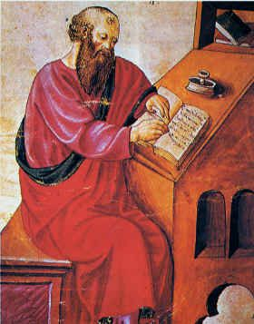
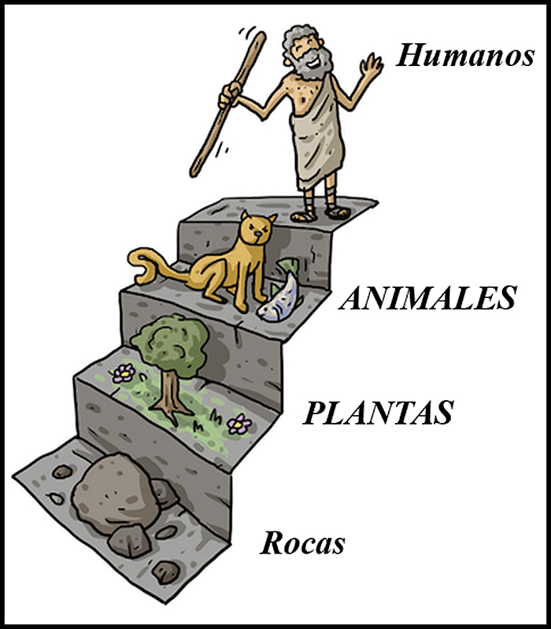

(384 a.C. – 322 a.C) Aristóteles fue un filósofo y científico griego nacido en la colonia de Estagira (actualmente Stavros), Macedonia 384 a.C. Fue un polímata: filósofo, lógico, biólogo y científico de la Antigua Grecia. Uno de los discípulos más brillantes de Platón. Sus ideas ejercieron mucha influencia sobre la historia intelectual de occidente por más de dos milenios, tiempo durante el cual se ha considerado como el pensador más decisivo de la historia, ejemplo del hombre sabio, fundador de la lógica y quién sentó las bases del método científico.
Vida

En el año 335 a.C. viajó a Atenas donde fundó su propia escuela llamada “El Liceo”, muchas de las clases eran públicas y gratuitas. A lo largo de su vida reunió una grandiosa biblioteca al igual que seguidores e investigadores conocidos, la mayoría de los trabajos que se conservan de él, son de esta época. Su vida se desarrolló en muchos campos de la filosofía entre otras y fue considerado una de las mentes más brillantes de la historia de la humanidad clásica. Aristóteles discípulo de Platón en la academia de Atenas, construyó un sistema filosófico propio sometiendo a crítica la teoría de las ideas de su maestro.
Aristóteles y su amor por los animales

Aristóteles dibujo y clasificó más de 400 especies, a él se le debe el término “animales”, y sentó las bases de la zoogeografía y la ecología con sus obras: De las partes de los animales y De la generación de animales. Recibía con gran simpatía las especies de flora y fauna que le hacía llegar su alumno Alejandro Magno.